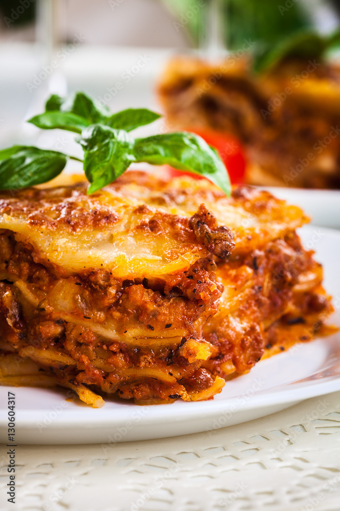

Lasagna

Description
Here we have the most luxurious Lasagna with.... a secret ingredient.
After you finish you won't want to eat anything else again
Ingredients
- Pasta sheets
- Tomato sauce
- Minced beef
- Onion
- Garlic
- Anything else you want
- Souls of children
Guide
- Gather all ingredients.
- Cook ground beef, onion, and garlic in a large skillet over medium heat until the meat is browned.
- Add tomato sauce, tomato paste, salt, and oregano and stir until well combined and heated through.
- Stir mozzarella, cottage cheese, and Parmesan together in a large bowl.
- Spoon a layer of the meat mixture onto the bottom of a slow cooker.
- Add a double layer of uncooked lasagna noodles, breaking noodles to fit into cooker as needed.
- Top noodles with a portion of cheese mixture.
- Repeat the layering of sauce, noodles, and cheese until all the ingredients are used.
- Cover and cook on Low until lasagna noodles are tender, about 4 to 6 hours.
- Just before plating. Add ground The Childrens Souls on top
Home